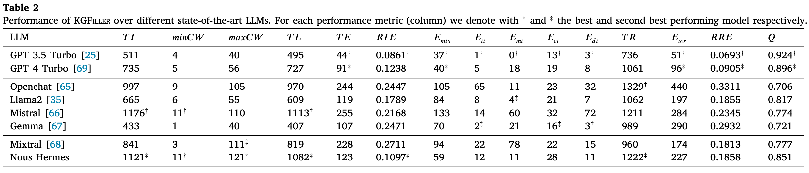

Large language models as oracles for instantiating ontologies with domain-specific knowledge
Giovanni Ciatto, Andrea Agiollo, Matteo Magnini, and Andrea Omicini
ArXiv preprint: arXiv:2404.04108
(Currently under revision for the Knowledge-Based Systems journal.)
Context (pt. 1)
The problem
-
Many knowledge-based applications require structured data for their operation
-
These systems commonly adapt their behaviour to the available data…
- … and acquire new data while operating
-
Notable example: recommendation systems
- providing hints to users based on their preferences…
- … and on the profiles of similar users
-
Chicken-and-egg problem, namely the cold-start:
- the system needs data to operate effectively
- the system acquires data while operating, from users
- at the beginning there’s no data, and no users
- how to escape this situation?
Context (pt. 2)
Example
As part of the CHIST-ERA IV project “Expectation”, we needed to:
-
design a virtual coach for nutrition
- giving personalised advices on what to eat when to users
-
the system would need data about:
- food, e.g. recipes, their ingredients, their nutritional values, etc.
- users, e.g. their preferences and their habits, goals, medical issues, etc.
-
model the data schema and find some data matching it
Context (pt. 3)
The insight
Obvious solution: generating (i.e., synthesizing) data
Yet, the generated data should:
- be syntactically valid, i.e. match the structure expected by the system
- be likely, and therefore meaningful for the system
- in a nutshell: match the domain the system is going to be deployed into
Example
- Generate a schema for recipes and user profiles
- Design the business logic on top of that
- Generate data matching the schema
Background (pt. 1)
Ontologies
-
Easy yet powerful means to represent knowledge in a structured way
- theoretically sound
- widely used in AI and knowledge engineering
- good for engineering any sort of data schema
- technologically supported by the Semantic Web stack (e.g. OWL, RDF, etc.)
-
In a nutshell:
- concepts (a.k.a. classes) sets of individuals (a.k.a. instances)
- roles (a.k.a. properties) binary relations between individuals
- top and bottom concepts ($\top$ and $\bot$) for universal and empty sets
- $\top$ (resp. $\bot$) is most commonly known as
Thing(resp.Nothing)
- $\top$ (resp. $\bot$) is most commonly known as
- $\mathcal{ALC}$ (and variants) is the most common Description Logic used for ontologies
Background (pt. 2)
Ontologies example
In $\mathcal{ALC}$ Description Logic:
- $Animal \sqsubset \top$
- $Cat, Mouse \sqsubset Animal$
- $Cat \sqsubseteq \exists \mathsf{chases}.Mouse$
- $Mouse \sqsubseteq \exists \mathsf{cooksFor}.Cat$
- $\mathtt{tom}, \mathtt{garfield} : Cat$
- $\mathtt{jerry}, \mathtt{rémy} : Mouse$
- $\mathsf{chases}(\mathtt{tom}, \mathtt{jerry})$
- $\mathsf{cooksFor}(\mathtt{rémy}, \mathtt{garfield})$
Background (pt. 3)
Definitions vs. Assertions
-
Definitions are axioms defining concepts, roles, and their relationships
- these are called TBox (for Terminological Box) in $\mathcal{ALC}$
- examples:
- $Animal \sqsubset \top$
- $Cat, Mouse \sqsubset Animal$
- $Cat \sqsubseteq \exists \mathsf{chases}.Mouse$
- $Mouse \sqsubseteq \exists \mathsf{cooksFor}.Cat$
-
Assertions are axioms assigning individuals to concepts or to roles
- these are called ABox (for Assertional Box) in $\mathcal{ALC}$
- examples:
- $\mathtt{tom}, \mathtt{garfield} : Cat$
- $\mathtt{jerry}, \mathtt{rémy} : Mouse$
- $\mathsf{chases}(\mathtt{tom}, \mathtt{jerry})$
- $\mathsf{cooksFor}(\mathtt{rémy}, \mathtt{garfield})$
Background (pt. 4)
How are ontologies constructed?
Two possibly inter-leaved phases:
-
“schema design” phase: defining concepts, roles, and their relationships
- i.e.: edit the TBox
-
“population” phase: assigning individuals to concepts or to roles
- i.e.: edit the ABox
The ontology population problem is about populating an ontology with instances, i.e. individuals
- this is often done manually
- called “ontology learning” when done (semi-)automatically from data
Background (pt. 5)
About ontology population
-
Manual population:
- time-consuming and error-prone
- requires domain experts (most commonly communities)
- potentially very precise ($\approx$ adherent to reality)
- and high-quality on the long run
-
Automatic population:
- faster and less error-prone
- requires datasets or big corpus of documents (most commonly)
- often non-incremental
Background (pt. 6)
Large Language Models (LLMs)

- Text in (query, a.k.a. prompt) $\rightarrow$ Text out (response, a.k.a. completion)
- Pre-trained on the publicly accessible Web (allegedly) $\Rightarrow$ plenty of domain-specific knowledge, for most domains
- X-as-a-Service paradigm $\Rightarrow$ pay-per-use + rate limits
- Temperature parameter $\rightarrow$ regulates creativity ($\approx$ randomness) of the response
Contribution
Insight: replace domain experts with large language models (LLMs),
treating them as oracles for automating ontology population
Let’s discuss how!
Problem statement (pt. 1)
-
Stemming from:
-
a partially- (or, possibly, non-)instantiated ontology $\mathcal{O} = \mathcal{C} \cup \mathcal{P} \cup \mathcal{X}$ consisting of:
- a non-empty set of concept definitions $\mathcal{C}$
- a non-empty set of property definitions $\mathcal{P}$
- a possibly-empty set of assertions $\mathcal{X}$
-
a subsumption (a.k.a. sub-class) relation $\sqsubseteq$ between concepts in $\mathcal{C}$
- spawning a directed acyclic graph (DAG) of concepts
-
a trained LLM oracle $\mathcal{L}$
-
a set of query templates $\mathcal{T}$ for generating prompts for $\mathcal{L}$
-
-
… produce $\mathcal{X}’ \sqsupset \mathcal{X}$ such that:
- $\mathcal{X}’$ contains novel individual and role assertions (w.r.t. $\mathcal{X}$)
- all assertions in $\mathcal{X}’$ are consistent w.r.t. $\mathcal{C}$ and $\mathcal{P}$, meaning that
- each individual in $\mathcal{X}’$ is assigned to the most adequate concept in $\mathcal{C}$
- $\mathcal{X}’$ contains role assertions matching the properties in $\mathcal{P}$ as well as reality
Problem statement (pt. 2)
Example
KgFiller
Our algorithm for ontology population through LLM, stepping through 4 phases:
-
population phase: each concept in $\mathcal{C}$ is populated with a set of individuals
-
relation phase: each property in $\mathcal{P}$ is populated with a set of role assertions
- as a by-product, some concepts may be populated even further
-
redistribution phase: some individuals are reassigned to more adequate concepts
-
merge phase: similar individuals are merged into a single one
- $\approx$ duplicates removal
About templates
Templates $\approx$ a string named placeholders to be filled with actual values via interpolation
- think of them as C’s
printfformat strings- e.g.
"Hello <WHO>" / {WHO -> "world!"} = "Hello world!"
- e.g.
Each phase leverages templates of different sorts:
- Individual seeking templates, e.g.
"Give me examples of <CONCEPT>" - Relation seeking templates, e.g.
"Give me examples of <PROPERTY> for <INDIVIDUAL>" - Best-match templates, e.g.
"What is the best concept for <INDIVIDUAL> among <CONCEPTS>?" - Individuals merging templates, e.g.
"Are <INDIVIDUAL1> and <INDIVIDUAL2> the same <CONCEPT>?"
About phases (pt. 1)
Population phase

-
Focus on some class $R \in \mathcal{C}$ (most commonly
Thing) -
For each sub-class $C$ of $R$ (post-order-DFS traversal):
- using some individual seeking template $t \in \mathcal{T}$:
- ask $\mathcal{L}$ for individuals of $C$
- add the individuals to $\mathcal{X}'$
- using some individual seeking template $t \in \mathcal{T}$:
About phases (pt. 2)
Relate phase
-
Focus on some property $\mathsf{p} \in \mathcal{P}$
-
Let $D$ (resp. $R$) be the domain (resp. range) of $\mathsf{p}$
-
For each individual $\mathtt{i}$ in $D$:
- using some relation seeking template $t \in \mathcal{T}$:
- ask $\mathcal{L}$ for individuals related to $\mathtt{i}$ by $\mathsf{p}$
- add the individuals to $R$
- using some relation seeking template $t \in \mathcal{T}$:
About phases (pt. 3)

-
Focus on some class $R \in \mathcal{C}$ (most commonly
Thing) -
Let $\mathcal{S}$ be the set of all direct sub-classes of $R$
-
For each individual $\mathtt{i}$ in $R$:
- using some best-match template $t \in \mathcal{T}$:
- ask $\mathcal{L}$ what is the best class for $\mathtt{i}$ among the ones in $\mathcal{S}$
- move $\mathtt{i}$ to the best class
- using some best-match template $t \in \mathcal{T}$:
-
Repeat for all direct classes in $\mathcal{S}$
- (this implies a pre-order-DFS traversal)
About phases (pt. 4)

-
Focus on some class $R \in \mathcal{C}$ (most commonly
Thing) -
For each sub-class $C$ of $R$:
- for each pair of syntactically-similar individuals ${\mathtt{i}, \mathtt{j}}$:
- using some individual-mergin template $t \in \mathcal{T}$:
- ask $\mathcal{L}$ if $\mathtt{i}$ and $\mathtt{j}$ are the semantically-similar
- if so, merge $\mathtt{i}$ and $\mathtt{j}$ in $\mathcal{X}'$
- using some individual-mergin template $t \in \mathcal{T}$:
- for each pair of syntactically-similar individuals ${\mathtt{i}, \mathtt{j}}$:
Practical aspects
Prompt-engineering (pt. 1)
Problem: queries may produce verbose and arbitrarily-structured responses, which are costly and hard to parse
- Q:
"can you generate examples of cats?" - A:
Certainly! While I can't physically generate images, I can certainly describe or provide information about different types of cats. Here are a few examples: 1. Domestic Shorthair: Description: A common and popular cat breed known for its short, sleek coat. Characteristics: Versatile in colors and patterns, friendly, and adaptable. 2. Siamese Cat: Description: Elegant and slender cat with distinctive color points. Characteristics: Vocal, social, and known for their striking blue almond-shaped eyes. ... 10. Russian Blue: Description: Short-haired cat with a bluish-gray coat and striking green eyes. Characteristics: Reserved but affectionate, known for its plush double coat.
Practical aspects
Prompt-engineering (pt. 2)
Solution: queries should explicitly ask for conciseness and structure to spend less
and simplify parsing the response
- Q:
"list of cat races, names only" - A:
Certainly, here's a list of cat breeds with names only: 1. Persian 2. Siamese ... 10. Domestic Shorthair
Practical aspects
Avoiding out-of-context responses
Problem: the query may be clear for the user, but ambiguous for the LLM,
which may lead to out-of-context responses
- Q:
"give me a list of examples of cats" - A:
Certainly! Here are some examples of cats: 1. Cat Stevens 2. Catwoman ... 10. Cat in the Hat
Practical aspects
Avoiding out-of-context responses
Solution: provide the context explicitly in the query
Beware! Two contexts are always in place:
- the domain of the ontology
- the ontological jargon itself
- C:
"you're a zoologist creating and ontology about animals species." - Q:
"give me a list of examples of cats" - A:
Certainly! Here are some examples of cat breeds: 1. Persian 2. Siamese ... 10. Domestic Shorthair
Practical aspects
Mining relevant information from responses
Problem: responses contain way more information than needed, in unstructured form

Persian, 2.Siamese, 3.Maine Coon, 4.Bengal, 5.Caracal, 6.Sphinx, …, 10.Domestic Shorthair
Practical aspects
Mining relevant information from responses
Solution: parse the response to extract the relevant information
Practical aspects
Minimising financial costs
Problem: cost model is most commonly proportional to consumed and produced tokens (words)
Solution: ask for conciseness + limit responses’ lengths + exploit caching
- most API support some
max_tokens-like parameter - simple cache mechanism can be implemented, using prompt + parameters as key
Practical aspects
Handling rate limitations
Problem: most LLM services apply rate limitations on a per-tokens or per-requests basis
Solution: apply exponential back-off retrial strategy + limit of retries
Experimental setup
Experiments tailored in the nutritional domain
Reference ontology (built for the purpose):

- plus role: $Recipe \sqsubseteq \exists\mathsf{ingredientOf}.Edible$ (all recipes are made of edible ingredients)
Experimented LLMs

Evaluation criteria (pt. 1)
Types of errors
-
Misplacement error ($E_{mis}$): the individual “belongs” the ontology, but it is assigned to the wrong class
- e.g. $\mathtt{garfield} : Aniamal$, when $Cat \sqsubset Animal$ exists
- or $\mathtt{tom} : Mouse$
-
Incorrect individual error ($E_{ii}$): the individual makes no sense in the ontology, yet it has a meaningful name
- e.g. $\mathtt{catwoman} : Cat$
-
Meaningless individual error ($E_{mi}$): the individual makes no sense at all
- e.g. $\mathtt{asanaimodelblablabla} : Mouse$
-
Class-like individual ($E_{ci}$): the individual has a name which is very similar to the one of a concept in the ontology
- e.g. $\mathtt{cat} : Cat$
-
Duplicate individuals ($E_{di}$): the individual is a semantic duplicate of another one in the ontology
- e.g. $\mathtt{pussy}, \mathtt{kitty} : Cat$
-
Wrong relation ($E_{wr}$): the relation connecting two individuals is semantically wrong
- e.g. $\mathsf{ingredientOf}(\mathtt{pineapple}, \mathtt{pizza})$ üòá
Evaluation criteria (pt. 2)
Metrics
- $TI$: total amount of generated individuals in the whole ontology
- $minCW$ (resp. $maxCW$): minimum (resp. maximum) class weight, i.e. amount of individuals in a class
- $TL$: total amount of individuals in leaf classes
- $TE$: total amount of individuals affected by errors
- $RIE = \frac{TE}{TI}$: relative amount of individuals affected by errors w.r.t. the total amount of individuals
- $E_{mis}$, $E_{ii}$, $E_{mi}$, $E_{ci}$, $E_{di}$, $E_{wr}$: total amount of errors for each type of error
- $TR$: total amount of role assertions in the whole ontology
- $RRE = \frac{E_{wr}}{TR}$: relative amount of role assertions affected by errors w.r.t. the total amount of role assertions
Results

- Errors are spotted by manual inspection!
Highlights
- Mistral gives the bigger ontolgoies, but with
~21.6%$RIE$ - GPT-3 gives the smaller ontologies, but with
~8.6%$RIE$ - Overall, most experiments’ $RIE$ is below
25%(except for Mixtral) - GPT-* have the best $RIE$
About the implementation
-
Experiment data: https://github.com/Chistera4-Expectation/knowledge-graphs
- each experiment is on a different branch:
experiments/food-SERVICE-MODEL-DATE-HOUR-ID

- each experiment is on a different branch:
About the experiments
Each commit of each experiment branch represents a consistent update to the ontology:
- this was very useful in the fine-tuning phase of the algorithm